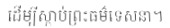
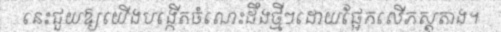
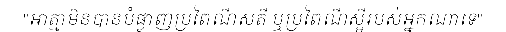

🎯 Accuracy Results
40.2%
Character-level
Accuracy
sample_0000

Ground Truth: ដើម្បីស្តាប់ព្រះធម៌ទេសនា។
Prediction: ដើម្បីស្តាប់ព្រះធម៌ទេសនា។
Length: 25 chars, 27 tokens |
Size: 189x32 px |
Match: ✅ Correct
sample_0001

Ground Truth: នេះជួយឱ្យយើងបង្កើតចំណេះដឹងថ្មីៗដោយផ្អែកលើភស្តុតាង។
Prediction: នេះជួយឱ្យយើងបង្កើតចំណេះដឹងថ្មីៗដោយផ្អែកលើភស្តុតាង។
Length: 50 chars, 52 tokens |
Size: 501x32 px |
Match: ✅ Correct
sample_0002
Ground Truth: រមណីយដ្ឋានអង្គរមិនមែនគ្រាន់តែជាសំណង់ប្រាសាទថ្មដ៏ធំស្កឹមស្កៃប៉ុណ្ណោះទេប៉ុន្តែវាក៏ជាសក្ខីភាពនៃចំណេះដឹងដ៏ជ្រៅជ្រះរបស់បុព្វបុរសខ្មែរក្នុងវិស័យស្ថាបត្យក
Prediction: រមណីយដ្ឋានអង្គរមិនមែនគ្រាន់តែជាសំណង់ប្រាសាទថ្មដ៏ធំស្តឹមស្តែប៉ុណ្ណោះទេប៉ុន្តែវាក៏ជាសក្ខី
Length: 147 chars, 149 tokens |
Size: 867x32 px |
Match: ❌ Incorrect
sample_0003
Ground Truth: "កាលបើមិនអាចជឿបាន រឿងស័ក្តិសិទ្ធិផ្សេងៗរបស់មហាគុរុ ផ្តើមតាំងវិមតិកង្ខាទុកជាមុនថា មិនមែនជារឿងពិត ប៉ុន្តែដើម្បីឲ្យបានភស្តុតាងបន្ថែមទៀត
Prediction: """កាលបើមិនអាចជឿបាន រឿងស័ក្តិសិទ្ធិផ្សេងៗរបស់មហាគុរុ ផ្តើមត
Length: 132 chars, 134 tokens |
Size: 1129x32 px |
Match: ❌ Incorrect
sample_0004
Ground Truth: ក្នុងគ្រា ព.ស ២១០០, គ.ស ១៥៥៦, ម.ស ១៤៧៨, ច.ស. ៩១៨ ឆ្នាំរោង អដ្ឋស័កនោះ ចៅអធិការវត្តព្រះពុទ្ធលាយល័ក្ខណ៍ លោកគង់ទូកសារាយអណ្តែតនោះទៅបិណ្ឌបាត្រឯនគរវត្ត
Prediction: ក្នុង្គងត្រា ព.ស ២១០០, គ.ស ១៥៥៦, ម.ស ១៤៧៨, ច.ស. ៩១៤ ឆ្នាំរោ
Length: 144 chars, 146 tokens |
Size: 1229x32 px |
Match: ❌ Incorrect
sample_0005
Ground Truth: រហូតធ្វើឲ្យសាសនាគ្រិស្តផ្សព្វផ្សាយទូលំទូលាយយ៉ាងឆាប់រហ័ស។ រីឯព្រះពុទ្ធសាសនាដែធ្លាប់ជាបដិបក្សនឹងនោប៉ុណាង៉ៈ នោះ ពេល
Prediction: រហូតធ្វើឲ្យសាសនាគ្រិស្តផ្សព្វផ្សាយទូលំទូលាយយ៉ាងឆាប់រហ័ស។ រី
Length: 112 chars, 114 tokens |
Size: 979x32 px |
Match: ❌ Incorrect
sample_0006
Ground Truth: ទាំងសាសនារបស់ព្រះពុទ្ធ ខ្ញុំក៏បានប្រតិបត្តិហើយ។ បានឮថា ព្រះសោណាភិក្ខុនី មានអាយុ បានសម្តែងនូវគាថាទាំងនេះ ដោយប្រការដូច្នេះ។
Prediction: ទាំងសាសនារបស់ព្រះពុទ្ធ ខ្ញុំក៏បានប្រតិបត្តិហើយ។ បានឮថា ព្រះសោណាភិក្ខុនី មានអាយុ បានសម្តែងនូវគាថាទាំងរេ
Length: 121 chars, 123 tokens |
Size: 626x32 px |
Match: ❌ Incorrect
sample_0007
Ground Truth: ដែលត្រូវដឹងដោយភ្នែក ថាមានពីរយ៉ាង គឺរូបគួរសេព១ មិនគួរសេព១ ដូច្នេះនុ៎ះ គឺតថាគតសំដែង សំដៅហេតុនេះឯង។បេ។ សំឡេងដែលត្រូវដឹងដោយត្រចៀក មានសភាពយ៉ាងនេះ
Prediction: ដែលត្រូវដឹងដោយភ្នែត ថាមានពីយ៉ាង គឺរូបចូតសេ។ មិនកួនសេ។ ដូច្នេះនុ៎ះ គឺតថាគតសំដែង សំដៅសាតុនេះឯង។ចេ។ សំឡើងដែលត្រូវឹងដោយព្រចៀត មានសមា
Length: 140 chars, 142 tokens |
Size: 559x32 px |
Match: ❌ Incorrect
sample_0008

Ground Truth: "អាត្មាមិនបានបំផ្លាញប្រពៃណីសតី ឬប្រពៃណីស្អីរបស់អ្នកណាទេ"
Prediction: "អាត្មាមិនបានបំផ្លាញប្រពៃណីសតី ឬប្រពៃណីស្អីរបស់អ្នកណាទេ"
Length: 56 chars, 58 tokens |
Size: 506x32 px |
Match: ✅ Correct
sample_0009
Ground Truth: លោកធាតុវិទូ លោកមែខ្ស-ថេហ្កម៉ាខបានផ្តល់នូវវគ្គីករណសាស្ត្រមួយអំពីពួកចក្រវាលក្រៅពីចក្រវាលដែលយើងសង្កេតឃើញធ្លាប់ស្គាល់រួចមកហើយ។
Prediction: លោកធាតុវទូ លោកមែខ្យ ចេហ្ម៉ាង់បានផ្តល់នូវវត្តិករណសាស្ត្រមួយអំពីពួកចត្រវាលត្រៅពឹងក្រវាលដែលយើងសង្កេតឃើញខ្លា
Length: 122 chars, 124 tokens |
Size: 607x32 px |
Match: ❌ Incorrect